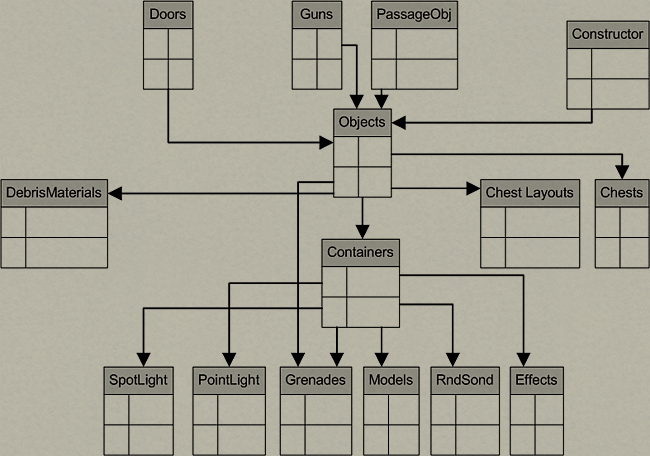
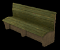
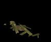
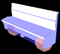
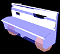
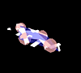
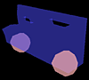
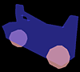
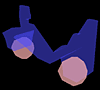
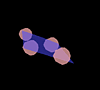

Создание новых объектов
Помимо операций с готовыми объектами и изменения их параметров, редактор позволяет выполнять импорт 2D- и 3D-объектов, а также звуковых файлов. Все операции импорта объектов выполняются одинаковым образом. Вначале нужно создать файл или несколько файлов с объектами в формате, пригодном для редактора, затем подобрать для нового объекта подходящую ветвь дерева или при необходимости создать новую ветвь, и создать новый объект (item, т.е. ресурс одного из типов, существующих в редакторе). Эти операции выполняются в окне списка ресурсов с помощью контекстного меню, которое вызывается при нажатии правой кнопки мыши на соответствующую ветвь ресурсного дерева.
 Пункт «New Folder..." позволяет создать новую ветвь (папку) на дереве, пункт «New Item...» — создать новый объект. При создании объекта выводится диалоговое окно, вид которого зависит от вида объекта. Например, при создании нового темплейта необходимо задать его длину, ширину и имя, а при вставке графического объекта или звука — открыть окно файловой системы и выбрать файл, который нужно импортировать (или экспортировать — с точки зрения объекта). Как и при создании профиля, настоятельно рекомендуется в именах использовать только латинские буквы и цифры без пробелов и знаков препинания.
Пункт «New Folder..." позволяет создать новую ветвь (папку) на дереве, пункт «New Item...» — создать новый объект. При создании объекта выводится диалоговое окно, вид которого зависит от вида объекта. Например, при создании нового темплейта необходимо задать его длину, ширину и имя, а при вставке графического объекта или звука — открыть окно файловой системы и выбрать файл, который нужно импортировать (или экспортировать — с точки зрения объекта). Как и при создании профиля, настоятельно рекомендуется в именах использовать только латинские буквы и цифры без пробелов и знаков препинания.
Контекстное меню позволяет удалять и переименовывать ветви и объекты, а также копировать их имена. Здесь же можно задать цвет, которым будет выводиться имя в дереве, цвет служит только для удобства маркировки и не имеет заранее заданного смысла. Поиск объектов в пределах дерева (Ctrl+F) можно выполнять или по номеру, или по варианту.
Вновь созданному ресурсу автоматически присваивается уникальный номер (ID), по которому на него можно ссылаться, номер удобно использовать для поиска. После этого необходимо выполнить импорт объекта: в окне файловой системы, которое открывается при выборе источника в списке свойств нужно найти на диске соответствующий ресурс, тогда редактор выполнит импорт и поместит новый ресурс в один из каталогов пользовательского профиля, создав в нём соответствующий файл. С этого момента ресурс доступен для использования в редакторе, его можно вывести в основное окно (посмотреть графический объект, прочитать текст, прослушать звук), сделать на него ссылку и т.д. Для многих ресурсов необходимо задать обязательные параметры, для справки смотрите параметры, которые есть у ресурсов аналогичного типа, существующих в БД игры. Сложные объекты могут иметь большое количество ссылок на другие ресурсы, все их необходимо заполнить. Например, у 3D-объектов есть геометрия (модель), текстуры поверхностей для различных вариантов объектов, AI-геометрия, AI-материал и т.д.
Наиболее удобно импортировать новые объекты при помощи мастеров (Wizards), которые вызываются через пункт Tools в главном меню. Мастер выводит ряд диалоговых экранов, в которых нужно отметить необходимые поля. В первом экране мастера ввода нового объекта следует выбрать папку дерева, где нужно будет разместить объект, и указать число стадий разрушения. В следующем экране следует выбрать файлы-источники данных для объектов и указать корневой узел RootJoin для основной и AI-геометрии. Последний экран определяет свойства материалов объекта. Более подробно параметры объектов описаны дальше в этом разделе.
Текстовые ресурсы
Все текстовые ресурсы, которые выводятся в интерфейсе игры, собраны на закладке Strings. Они разбиты на несколько групп, в том числе: субтитры для реплик персонажей, их биографии, тексты диалогов; интерфейсные надписи, названия и описания объектов, строки и тексты заданий и подзаданий, сценарные тексты, выводимые при получении улик и т.д. Создавать новые текстовые ресурсы нужно в соответствующих ветвях ресурсного дерева.
Часть интерфейсных строк содержится вместе с HTML-описателями (дескрипторами), описывающими размер и цвет шрифта, а также расположение строк внутри текстовой области. Эти описатели должны сохраняться при изменении текстов или при создании новых текстовых ресурсов по способу копирования существующих. Менять описатели без особой необходимости не рекомендуется. В некоторых случаях можно менять размер шрифта (в ограниченных пределах), например, если надпись плохо «вписывается» в соответствующее место интерфейса. Учтите, что шрифты в игре сделаны в виде текстур фиксированного размера, которые в отличие от TTF-шрифтов не могут произвольно менять масштаб. При изменении размера шрифта игровая платформа выберет одну из существующих текстур, наиболее близкую по размеру. Имена шрифтов и их размеры можно посмотреть на закладке Fonts.
Окно, в котором выводятся текстовые строки, не предоставляет больших удобств по вводу и редактированию строк, и использовать его для работы над текстами, кроме мелких правок, нецелесообразно. Основная работа по созданию и правке текстов должна выполняться в соответствующих программах, после чего готовый текст переносится в редактор с помощью копирования и вставки. Текстовые абзацы представляют собой длинную строку, не содержащую символов переноса строки. При выводе абзаца в игровом интерфейсе игровая платформа самостоятельно разделяет слова по строкам. Для принудительного переноса строк и создания новых абзацев следует использовать описатель
. Список элементов языка HTML, поддерживаемых игровой платформой, и шрифтов приводится в Приложении 5.
Обратите внимание, чтобы в текстах, которые готовятся в обычном редакторе (MS Word и т.д.), был отключен перенос слов по слогам, иначе эти символы перейдут в игровые тексты.
Импорт звуковых файлов
Игра поддерживает несколько типов звукового сопровождения — фоновую музыку и звуки окружающей среды (ambience), реплики персонажей (диалоговые фразы, acknowledgment'ы), звуковые эффекты (SFX). Редактор позволяет менять существующее звуковое сопровождение своим или включать новые звуковые файлы. В игре есть достаточно большая подборка звуковых эффектов (особенно звуков стрельбы и эффектов взрыва), поэтому прежде чем добавлять свой эффект, посмотрите, найдётся ли среди ресурсов что-то подходящее. Звуки можно проигрывать в интерфейсе редактора двойным щелчком по иконке ресурса в ресурсном дереве.
Все звуковые эффекты (однократные и циклические) записываются в формате *.wav с частотой 44 кГц, моно. Однократные эффекты должны быть созданы с помощью кодировки Microsoft ADPCM, циклические - Microsoft PCM.
Игра воспроизводит музыкальное сопровождение и речь в формате Ogg Vorbis. Музыку, записанную в исходном формате *.wav, 44 кГц стерео, нужно преобразовать с пределом скорости потока (bitrate) 128 кбит/с. Скорость потока речи, записанной в формате 44 кГц моно, должна быть 96 кбит/с. Все файлы *.ogg требуется переименовать в расширение *.wav непосредственно перед операцией импорта в редакторе. Конверторы, необходимые для преобразования, можно загрузить на странице проекта Ogg Vorbis по адресу: http://www.vorbis.com/download.psp
Все звуки размещаются в группе ресурсных закладок Music/Sound, при импорте звука выберите тематически соответствующую ему ресурсную закладку и создайте новый ресурс (item). Затем в его свойствах найдите расположение файла-источника и выполните импорт, далее укажите параметр Cycled для «зацикленных» звуков (например, эффекты окружающей среды) и оставьте Non cycled для всех остальных звуков.
Звуковые эффекты как часть более общих эффектов подключаются к эффектам, которые они озвучивают — например, выстрелы или взрывы. Музыка и звуки окружающей среды определяются в свойствах миссии. Подключение речи персонажей сложнее: необходимо связать звук (Sound), анимацию речи (HeadSeq) и текст, выводящийся в субтитрах диалогов или на игровом экране (Strings). Эти параметры находятся на ресурсной закладке AckInfo.
Импорт 2D-графики
Плоское изображение (2D-текстура) должно быть создано в формате TGA или DXT (формат DirectX). При импорте изображения в редакторе следует определить следующие параметры.
| Type — способ преобразования картинки: | |
| ordinary | ввести «как есть», без изменений |
| bump | конвертировать карту высот в карту нормалей |
| transparent | этот параметр нужно использовать для текстур прозрачных материалов и частиц (premultiplied alpha) |
| transparentAdd | то же, что и transparent, но при использовании этого параметра прозрачная текстура будет накладываться по add, а не по альфе |
| StorageType — где будет размещаться текстура: | |
| ordinary | обычная текстура, хранится в ресурсах на диске до обращения к ней |
| 2D | текстура будет помещена в кеш 2D-текстур (используется только для интерфейсных текстур для ускорения отображения) |
Format — формат, в который будет преобразована текстура. 2D-текстуры и частицы (parti-cles) должны быть обязательно в формате 8888 (R-G-B-A), остальные по выбору, причём формат dxt предпочтительнее.
AddrType — clamp/wrap. Этот параметр влияет на расчет mip-уровней, должен совпадать с типом использования в материале для получения оптимального качества изображения.
NMips — количество mip-уровней: 0 — все уровни, 1 — один уровень и т.д.
MappingSize/BumpGain — параметры, влияющие на конвертацию карты высот в bump: mapping size — «размер текстуры», bumpgain — её «высота».
Width, Height, AverageColor — эти поля заполняются автоматически при выборе файла.
InstantLoad — прямая загрузка. Если флажок установлен в 1, для этой текстуры не будет использован механизм отложенной загрузки. В большинстве случаев использовать нежелательно, чтобы исключить задержку при загрузке текстуры.
Создание 3D-объектов
3D-объекты — основной вид объектов, используемых на картах. Большинство 3D-объектов в игре создано с помощью редактора Maya. Для работы с Maya предполагается соответствующая подготовка, поэтому о создании3D-объектов мы не рассказываем. В комплект редактора включены дополнения (plugins) и скрипты для Maya версий 4.0, 4.5 и 5.0 — они служат для экспорта 3D-объектов и анимаций. В комплект также входят примеры различных объектов, которые можно использовать как образцы при разработке в Maya собственных объектов, эти примеры можно использовать на своих картах.
Для экспорта 3D-объектов необходимо, чтобы редактор Maya был установлен на том же компьютере, что и редактор Silent Storm, поскольку при экспорте происходит запуск некоторых компонентов Maya. При совместной работе над проектом в локальной сети это условие упрощается, достаточно иметь Maya только у художников.
3D-объекты включают набор составных частей, взаимосвязь между которыми в наиболее общем виде изображена на схеме:

Doors (двери), Guns (оружие), PassageObj (лестницы, люки, ворота), Constructor (строительные блоки) — это примеры различных 3D-объектов. Doors и PassageObj или RPG-объекты — более сложные объекты по сравнению с «элементарными» объектами, поскольку они имеют дополнительную функциональность. Для лучшего понимания свойств и частей объектов приводим их классификацию.
Строительные объекты представляют собой блоки определённой формы из строительных материалов (дерева, кирпича, камня и т.д.). Их RPG-свойства определяются свойствами материала, который выбирается отдельно при строительстве здания. У стенных блоков должна быть определена «внешняя» и «внутренняя» текстура (текстуры отделки), у всех блоков — текстура боковых поверхностей и текстура разлома. Специальных фаз разрушения строительные блоки не имеют, их разрушение и эффекты определяются игровой механикой.
Двери представляют собой объекты, которые могут поворачиваться или сдвигаться. В отличие от строительных блоков, у дверей есть фазы разрушения, которые должны быть включены в набор составных частей объекта. Между фазами разрушения должны быть соответствующие визуальные и акустические эффекты (анимации разлетающихся досок, деформация металла и т.д.). Последняя фаза (стадия) разрушения соответствует выбитой двери, т.е. её отсутствию. Двери могут быть закрыты на замок и заминированы.
Ящики как RPG-объекты — это прямоугольные коробки с открывающейся крышкой или передней стенкой (в игре также есть закрытые ящики, разновидность мебели). У ящиков предусмотрена внешняя в внутренняя текстура. Изменением внешней текстуры легко поменять принадлежность ящика той или иной стороне-участнице. Как и двери, ящики имеют фазы разрушения, могут быть закрыты на замок и/или заминированы. У ящиков могут быть определены внутренние «полки» или уровни, на которых размещаются различные предметы, при отсутствии полок предметы кладутся на дно ящика.
Сейфы по своим параметрам похожи на ящики, но стадий разрушения у них нет.
Оружие в игре не разрушается, его текстура всегда постоянна. Боеприпасы к стрелковому оружию также не разрушаются. Гранаты и мины стадий разрушения не имеют, у них есть только исходное состояние и эффект от взрыва (вспышка и грохот).
Растения (деревья и кустарники) разрушаются по стадиям, визуальный эффект разрушения обычно состоит из падающих листьев и обломков древесины.
Разнообразные местные предметы, как на улице, так и внутри помещения, имеют соответствующую геометрию, текстуру, стадии разрушения с визуальными и акустическими эффектами. Отдельная подгруппа объектов включает взрывоопасные предметы — бочки с воспламеняющимися веществами, газовые баллоны, химические ёмкости, ящики с тротилом и т.д. Как правило, такие объекты имеют исходное состояние и конечную стадию разрушения, а также содержат эффекты взрыва.
В «статическом» виде все 3D-объекты состоят из полигонального каркаса и текстуры, натянутой на этот каркас. Используемые объекты (usable objects) с движущимися частями (двери, ящики, шлагбаумы) имеют анимацию открытия/закрытия. Скелетные модели, к которым относятся персонажи, включают более сложные анимации (все стандартные движения персонажей реализованы в игровой платформе; специально анимировать требуется лишь сложные нестандартные движения). Обратите внимание, что головы персонажей не включены в модели из-за того, что форма головы и анимация мимики реализована в игре отдельным механизмом. Однако в редакторе возможен импорт текстуры для головы.
Для большинства разрушаемых объектов есть понятие «AI-геометрия» (AI geometry). Это упрощённая геометрическая схема объекта, используемая при расчёте взаимодействия пули, снаряда или взрывной волны с препятствием (использование реальной геометрии чрезмерно усложнило бы расчёты). На снимках в верхнем ряду изображены различные стадии разрушения скамейки, которая есть среди примеров, прилагаемых к редактору (Object.mb). В следующих рядах снимков можно видеть обычную и AI-геометрию (без текстур). Розовые сферы показывают точки опоры скамейки (AI-сферы), потеря половины опор и более ведёт к разрушению объекта.
|  | 
| 
| 
|  |
|  |  | 
| 
|  |

|  |  |  |  |
Объекты могут иметь различные варианты, как правило, для этого достаточно изменить текстуру или форму объекта. Совокупность свойств объекта образует контейнер. В контейнер входят модель объекта, текстура, стадии разрушения (если они есть), AI-геометрия, различные виды освещения, а также визуальные и звуковые эффекты разрушения. Материалы обломков и RPG-свойства объектов не входят в контейнер, их можно выбирать отдельно.
При создании объектов в редакторе Maya необходимо воспроизвести все стадии разрушения для видимой геометрии и для AI-геометрии. Для экспорта 3D-объектов из Maya должны быть подключены дополнения (plugins) и скрипты, в противном случае вы будете видеть в окне консоли ошибки типа Invalid file type specified и выполнить экспорт не удастся (предупреждения о несоответствии версий объекта и редактора можно игнорировать). Некоторые скрипты используются напрямую при работе в Maya, например, установку AI-сфер в местах опор удобно выполнять скриптом.
При включении в ресурсы нового 3D-объекта используется несколько ресурсных закладок. Objects «собирает» объект, ссылаясь на контейнер (контейнеры), Containers содержит ссылки на 3D-модели и AI-геометрию с учётом различных стадий разрушения и соответствующих анимаций. Собственно сами модели, AI-геометрия и эффекты разрушения находятся на закладках Models, AIGeometries, Effects, Sound или Rnd sound, в этих закладках и выполняется импорт составных частей объекта в ресурсы (обратите внимание, что в контекстном меню для этого служит пункт Export). В числе параметров моделей и AI-геометрии необходимо задавать корневые узлы (Root Joints), которые служат для отсчёта центра модели, изначально их имена определяются в Maya. Например, для моделей скамейки имя корневого узла — WaitingBench, имя узла для AI-моделей этой же скамейки — WaitingBench_AI.
В общем случае перед импортом нового объекта рекомендуется посмотреть, как устроены аналогичные объекты в редакторе, какой у них список параметров, какие ссылки на другие ресурсы, на каких закладках и в каких ветвях дерева они находятся. Эти данные можно использовать как прототип при импорте своего объекта.
Головы персонажей в игре выполнены в редакторе LifeStudio:HEAD http://www.lifemi.com. Эта программа не очень распространена и используется преимущественно профессиональными разработчиками игр. Поэтому для модификации голов рекомендуем использовать готовые модели и анимации (см. закладки Heads и ComplexHeads), наложив на них свою текстуру. Образец текстуры головы есть среди файлов, прилагаемых в качестве примеров
.Скрипты
Скрипт — это набор функций, связанных логическими операторами, который по существу представляет собой программу. В игре Silent Storm используется скриптовый язык LUA (см. список функций в Приложении 6). Описание языка LUA и различные руководства по нему можно найти в сети Интернет по адресу http://www.lua.org
Игровая платформа поддерживает достаточно большое количество готовых функций. Часть из них используется для управления персонажами в скриптовых роликах, для изменения поведения и параметров отдельных персонажей, для общего изменения логики в процессе прохождения миссии, проигрывания видео- и аудиоэффектов и т.д. Другие функции нужны для проверок различных параметров, состояний и событий в ходе игре — от факта выполнения отдельных заданий до проверки предметов, подобранных игроком.
Чтобы вызвать прописанный к миссии скрипт, после загрузки нужного базового темплейта следует нажать Ctrl+S. В открывшемся окне можно создавать и редактировать скрипт, который автоматически сохраняется после закрытия окна.
Структура скрипта описывается следующим образом.
- 1. Описание параметров. —- Declaration Var
Здесь обычно выставляются стартовые значения для глобальных переменных. Описываются группы персонажей, камеры, так как напрямую обратиться к ним можно лишь через ID.
2. Описание функций. —- Declaration Func
Определение в теле скрипта необходимо для всех новых, ещё не описанных функций. При использовании циклов с проверками следует в конце цикла вставлять паузу хотя бы в 20 сегментов, т.е. 1 секунду (1 сегмент — это временной интервал порядка 0,05 с).
3. Вызов функций —- Main Script
Функции выполняются последовательно друг за другом, т.е. пока не выполнится предыдущая функция, следующая не выполняется. При необходимости их можно запускать параллельно с помощью команды StartThread( function, a, b, c, d ). Обычно это требуется для функций, выполняющихся продолжительное время.
Если вызывается скриптовая функция, относящаяся к персонажу, настоятельно рекомендуется предварительно отменить текущее действие персонажа командой UnitCance-lAction(unit).
Cкрипт к темплейту 1000006
-- Declaration Var
OpenShutters = false -- sets the initial value for the OpenShutters variable
SwitchON = false -- sets the value for the global SwitchON variable
Group1 = GetGroup( 2 ) -- associates the variable to the group with ID=2
Switch = "Switch"
function SwitchCheck() -- function that launches ShuttersOpen() in case of use of the Switch object.
SwitchON = ObjectIsOpened( GetObject( Switch ) )
while true do
if SwitchON ~= ObjectIsOpened( GetObject( Switch ) ) then
SwitchON = ObjectIsOpened( GetObject( Switch ) )
ShuttersOpen()
end
Sleep( 40 )
end
end
function ShuttersOpen() -- function that opens the gate shutters if they are closed or closes them if they are open.
if ObjectIsOpened( GetObject( "Shutter1" ) ) and ObjectIsOpened( GetObject( "Shutter2" ) ) then
OpenShutters = true
end
if not ( ObjectIsOpened( GetObject( "Shutter1" ) ) ) and
not( ObjectIsOpened( GetObject( "Shutter2" ) ) )
then
OpenShutters = false
end
if OpenShutters then
ObjectClose( GetObject( "Shutter2" ) )
Sleep( random( 20 ) )
ObjectClose( GetObject( "Shutter1" ) )
out( "Close" )
OpenShutters = false
else
ObjectOpen( GetObject( "Shutter1" ) )
Sleep( random( 20 ) )
ObjectOpen( GetObject( "Shutter2" ) )
out( "Open" )
OpenShutters = true
end
end
function SetPatrolRoute() -- function that specifies the route of the “Group1” group
local route = CreateRoute( "w1", "w2", "w3", "w4" )
GroupSetRoute( Group1, route, true )
end
--Main script
Floor( 4 ) -- specifies the highest screened storey
SetPatrolRoute()
SwitchCheck()